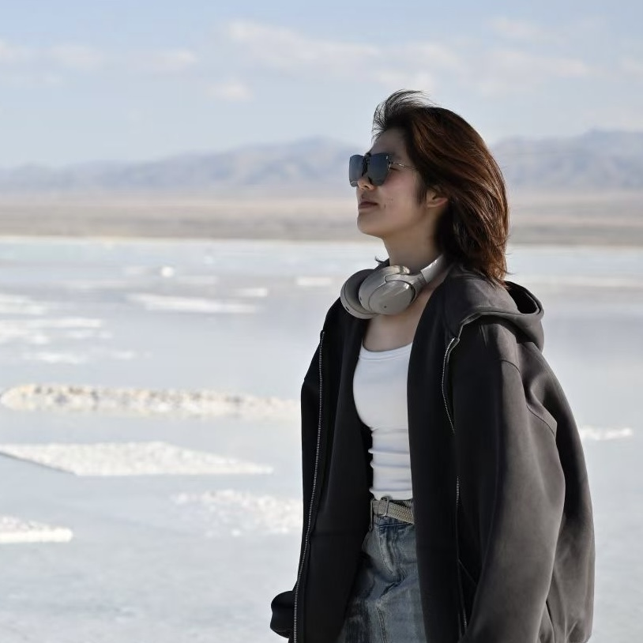

|
Hanyi Zhao 赵涵奕
I am an undergraduate student majoring in Automation at Harbin Institute of Technology, Shenzhen, expecting to graduate in 2026. I have worked as a research intern at Tsinghua Shenzhen International Graduate School and the National University of Singapore, advised by Prof. Xueqian Wang and Prof. David Hsu, respectively.
My research interests lie in robotics, computer vision, and embodied intelligence. Outside of research, I enjoy photography 📷 and playing the guzheng 🎶.
I am currently applying for Ph.D. programs and am particularly interested in opportunities to explore robotics!
Email /
CV /
Github
|

|
|
My research interests center on robotic perception and planning, with an emphasis on enabling robots to understand and interact effectively within dynamic, unstructured environments.
My long-term goal is to enhance robots' capability to infer the environment and perform robust, generalizable manipulation across diverse real-world scenarios.
Ultimately, I aim to advance robot intelligence for adaptive manipulation in open-world environments, contributing to technologies that improve the quality of human life.
|
|
|
Learning Generalizable Language-Conditioned Cloth Manipulation from Long Demonstrations
Hanyi Zhao, Jinxuan Zhu, Zihao Yan, Yichen Li, Yuhong Deng, Xueqian Wang
IROS, 2025
project page
/
arXiv
In this paper, we propose a novel pipeline that learns basic skills from long demonstrations and autonomously discovers these skills for cloth manipulation using an LLM to provide commonsense knowledge.
The learned basic skills are then composed to generalize to unseen multi-step cloth manipulation tasks.
|
|
|
Scene Representation for Task and Motion Planning (Ongoing)
In this work, we aim to construct a 3D scene representation for robotic manipulation that integrates a symbolic object graph with geometric representations (TSDF).
To achieve accurate object pose tracking, we incorporate the robot's end-effector motions with 3D visual observations.
Furthermore, the scene graph is employed to describe the spatial relationships among objects in the environment.
|
|
|
Autonomous Mobile Robot Design and Development
The 19th National University Students Intelligent Car Race
In this project, we designed and implemented an autonomous mobile robot from scratch,
capable of following complex trajectories, detecting and collecting target cards along its path, and performing visual classification.
|
|
|
RoboMaster Aerial Robot Design and Optimization
RoboMaster Competition 2023
We developed a lightweight, high-performance aerial robot featuring a shooting gimbal, an optimized airframe, and propeller guards,
and fabricated the complete system using advanced manufacturing techniques, including 3D printing, laser cutting, and precision carving.
|
|
|
Visual-Based Navigation and Object Recognition
HIT AUTO3003 Digital Image Processing
We designed an algorithm for autonomous navigation along densely cone-marked trajectories,
enabling real-time detection and recognition of target images at intersections and directional decisions based on visual input.
|
• National Scholarship, 2023.10
• First-class Undergraduate Academic Scholarship at HIT Shenzhen, 2022-2024
|
Last updated: 20 October 2024
Template from Jon Barron
|
|
{kind=link}